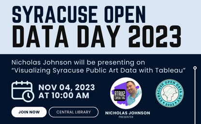
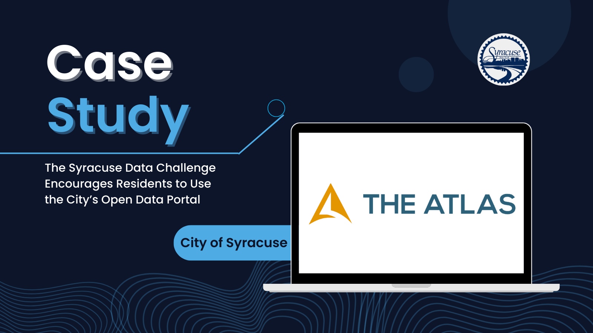

Presenting at Syracuse Open Data Day 2023
At Syracuse Open Data Day 2023, attendees enjoyed a presentation on "Visualizing Public Art Data with Tableau." Led by Ataviz Consulting's founder, Nick Johnson, the event delved into the power of data analytics and visualizations. Participants acquired the skills to create their own data visualizations using Tableau, bridging the gap between technology and culture.

Official Stats & Analytics Provider for Upstate Trojans Basketball
We are thrilled to announce that Ataviz Consulting is now the official statistics and analytics provider for the newest ABA basketball team in Syracuse, the Upstate Trojans. We look forward to bringing our data-driven expertise to the team and contributing to their success on the court.
Ataviz Consulting Recognized by CIOReview
Ataviz Consulting is proud to announce our recognition as one of the Top 10 Predictive Analytics Solutions Providers 2023 by CIOReview Magazine. This achievement reflects our commitment to delivering cutting-edge data-driven solutions and driving innovation in the field of predictive analytics.

Ataviz Consulting Joins the CNY Conversations Podcast
Join Ataviz Consulting's founder, Nick Johnson, as he shares his expertise as a guest on the CNY Conversations Podcast, hosted by Jason Klink. Discussion points include the power of data analytics in driving business success as well as how Chat-GPT is becoming the face of AI and how it is changing the world around us.

Syracuse Data Challenge Case Study @ The Atlas
The City of Syracuse established the Syracuse Data Challenge to incentivize residents to create innovative projects using the city’s open source data. The challenge successfully generated awareness for the city’s open data portal and increased citizen participation in utilizing data for the public good.

Nick Johnson Wins the Inaugural Syracuse Data Challenge
We are thrilled to announce that our very own founder, Nick Johnson, has been selected as the first-ever Syracuse Data Challenge winner by the City of Syracuse! This past March, Nick utilized the Syracuse Public Art open dataset to create a visually stunning Tableau dashboard. We are proud of his hard work and dedication that earned him this recognition.